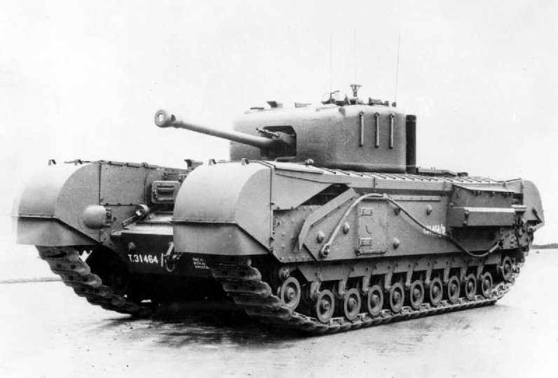

The Churchill tank, officially known as the Infantry Tank Mk IV, was a British heavy tank introduced in 1941. Designed for infantry support, it prioritized thick armor and cross-country ability over speed. Despite early mechanical issues, later versions became highly reliable and versatile, making the Churchill one of the most successful British tanks of World War II. Numerous variants were produced, including the Churchill Crocodile (flamethrower), AVRE (engineering), and Bridge-layer, demonstrating the design’s adaptability. The Churchill became a symbol of British resilience and engineering ingenuity during WWII.

- Characteristics:
- Type: Infantry tank
- Weight: 40 tons
- Crew: 4
- Armament: 75mm OQF Mk.III; 2 x 7.92mm BESA
- Speed: 25 km/h